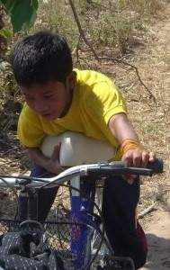
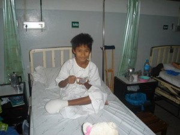
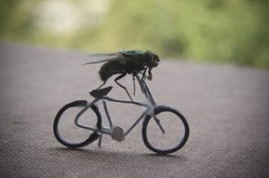
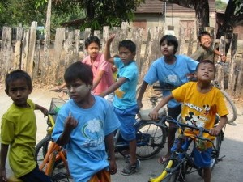

Cycling with Burmese Kids


This means we’ve also spent a lot of money on repairing bikes. For sure, one of the kids is destined to be a bike mechanic. Another should become a paramedic or at least learn a little first aid. We now have a dozen bikes in various stages of repair or disrepair. Some have been crashed beyond repair. We’ll soon be salvaging parts to build other bikes, I presume. At least, we’ve learned the value of a well-built Chinese bike, but only for riding on-road. To present, my own mountain bike has passed all the tests. It’s only required me to replace a broken pedal and adjust a derailleur once in the past year. I wish I could say the same for the other bikes. But, it has taken me many years of owning bikes to finally figure out which one will be the best for a given price. I must have owned a couple dozen bikes of my own during the past 10 years or so. I hope to use bikes in the future to generate electricity – another dream.


A-aaw lost part of his foot to a combination of foolhardiness on his part and a hit-and-run driver on another part. I’ve lost a father and grandfather to hit-and-run drivers as well. So far, the score is all tied at 1-1 on the scales of justice. My father’s driver met his own death as well as causing others. The driver who hit my grandfather still roams the world, free and unidentified. The hit-and-run driver who hit A-aw has been identified and his employer will help us even though the driver himself is nowhere to be found. It’s amazing how many people in the world want to avoid taking responsibility for the consequences of their own actions upon others. While the world and its fools may never come to terms with each other, the rest of us are still here dealing more honestly with what we CAN do to help each other. Often, this means ‘giving up’ on tightly held and cherished illusions to grow into Truth and Light. Unfortunately, America’s journey upon this path seems destined to end up going off a cliff (too many lemmings). Or, has it already gone off the edge and the country is in free-fall, in that moment of ‘never-never’ before it ‘crashes’ upon the rocks far below? Many have concluded so – myself amongst them.


I lost another good friend in Nepal. Synchronicity again – I only met him and his wife because I wanted to buy her bike. He was also in my Nepalese class. His wife was Japanese and they had two lovely children. They made a living hand-stitching beautiful silk embroidered Buddhist tangkas. Visiting his house one day to get parts for the bike, I was shocked to learn his whole family had just perished in a Thai airbus crash on a mountainside near Kathmandu. At least, their passing was quick and, hopefully, painless. Echoes of 9-11 ring in my mind. I went on with my bike journeys. I had a couple of more crashes cycling in Korea and China – once being knocked over by a van and another by another cyclist bent on getting through the intersection before me. Both hurt me and left my body with cuts, bruises, and scars – but I’m still here to tell this tale. All of these wounds have healed – I’ve moved on and am more balanced after building half a dozen bikes and cycling the countryside of China.


The kids in the shelter have learned their lesson as well. Now, we take it easy on the bikes – no more cross-country jaunts, except on the road. We have discovered a new sport – not Motocross – but water biking. The kids like to swim – Thailand has plenty of inviting swimming holes with cool, refreshing water. Now, we’ve learned that riding a bike into the pond and crashing it there doesn’t cost any injury to our body. The landing is soft and refreshing. We’ve already investigated all the local ponds this spring, during the dry season – at low tide, so to speak. All the bottoms are soft and muddy – no harm to anyone. Since we don’t have a water-park or slide anywhere near Mae Sot, I expect we’ll continue this new found sport. We only hope A-aaw joins us soon – foot or not – we still love him. I only need to learn to love myself after losing my American heart. Maybe, with a miracle, it can be transplanted with an Asian one.
Filed under: Cycling in Thailand and
Leave a Reply